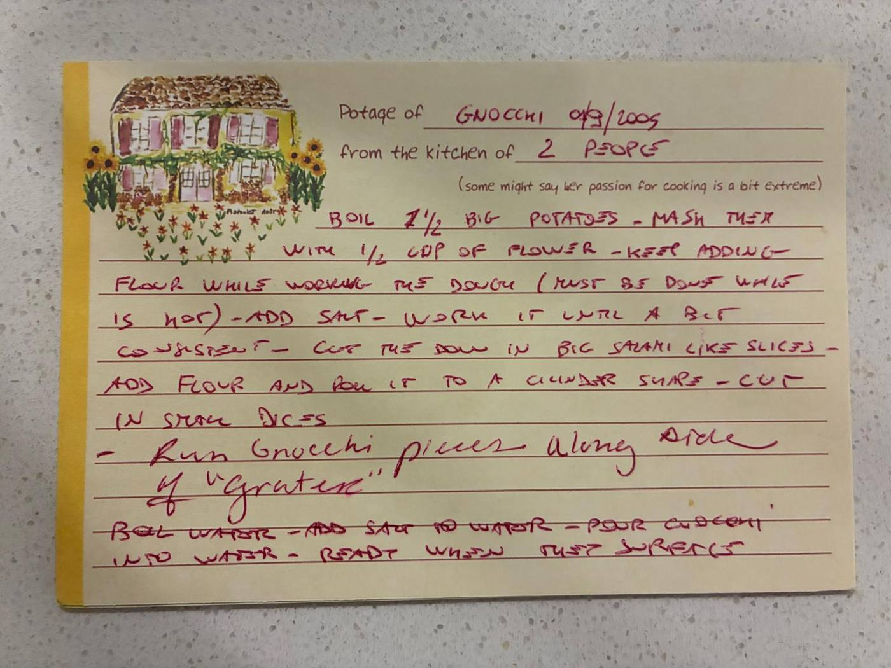

Mains
Gnocchi
Potato Dumplings
From the kitchen of Mom
Serves2

Mom's original card · tap to enlarge
Ingredients
Method tap a step to mark it done
- Boil the potatoes, then mash them with ½ cup flour.
- Keep adding flour while working the dough. This must be done while it is still hot.
- Add salt and work the dough until it holds together.
- Cut the dough into big salami-like slices. Flour them and roll each one into a cylinder.
- Cut into small pieces, then run each piece along the side of a grater.
- Boil water and add salt. Drop in the gnocchi. They're ready when they float to the surface.